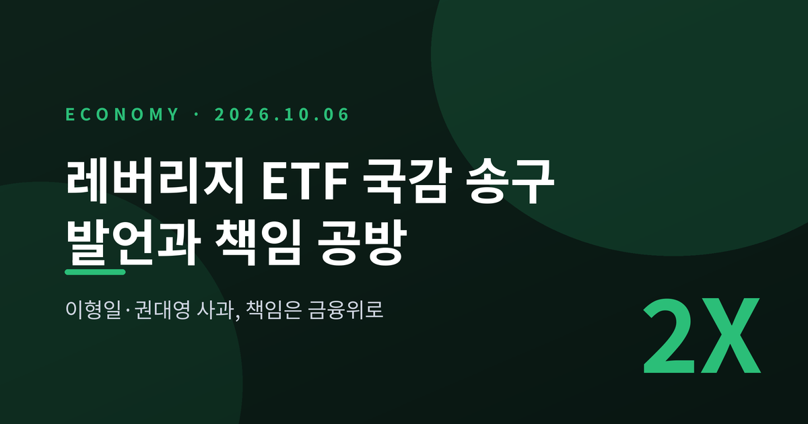
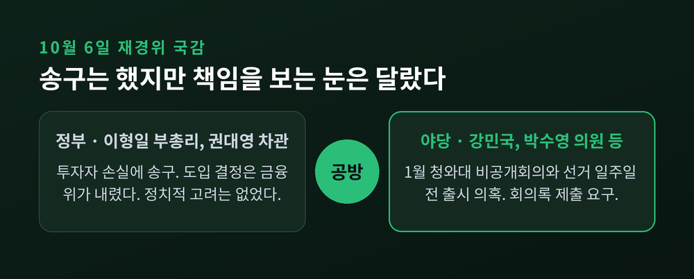
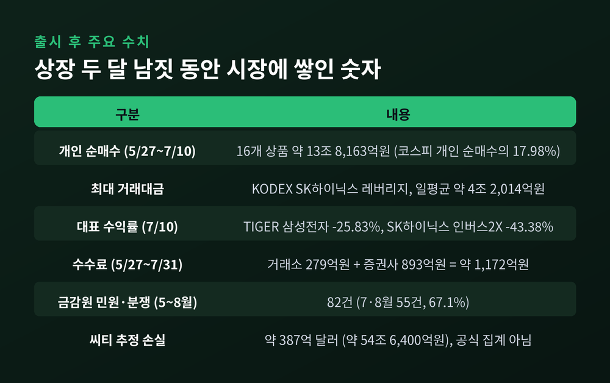
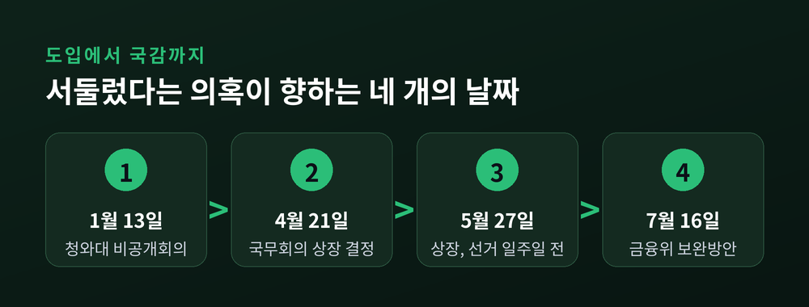
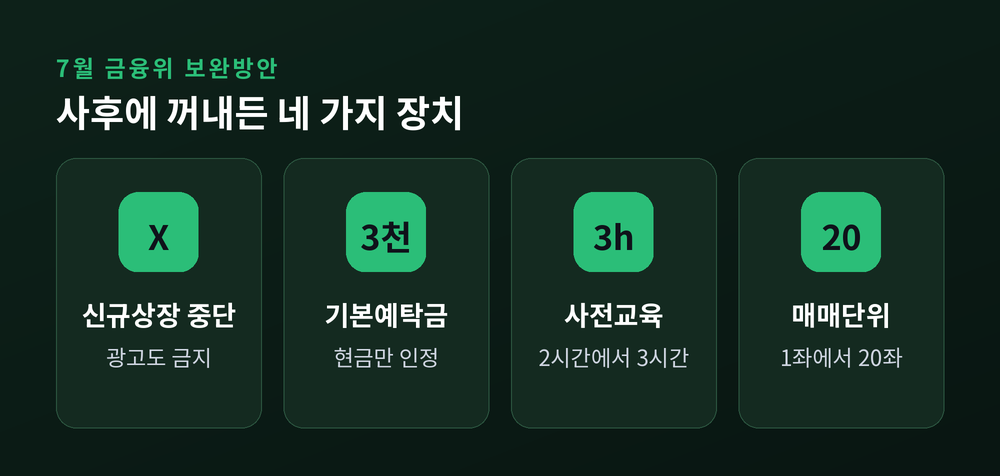
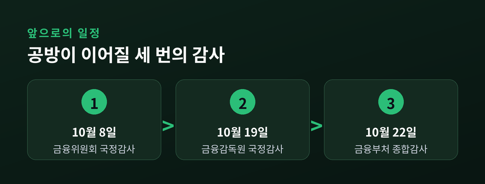

오늘은 10월 6일 국정감사에서 불거진 단일종목 레버리지 ETF 공방을 정리해 보려 합니다. 이형일 부총리와 권대영 재정경제부 1차관은 개인투자자 손실에 "송구하다"고 답했습니다. 다만 도입을 결정한 주체는 금융위원회라며 선을 그었고, 야당은 1월 청와대 비공개회의와 선거 직전 출시 일정을 문제 삼았습니다.
3줄 요약
1. 6일 재경위 국감에서 이 부총리와 권 차관이 투자자 손실에 사과성 발언을 내놓았습니다.
2. 도입 결정 주체와 정치적 고려 여부를 두고 정부와 야당의 주장이 정면으로 엇갈렸습니다.
3. 8일 금융위, 19일 금감원 국감이 이어져 공방은 한동안 계속될 전망입니다.
국회 재정경제기획위원회는 6일 재정경제부를 상대로 국정감사를 열었습니다. 쟁점은 5월 27일 상장된 삼성전자·SK하이닉스 단일종목 레버리지·인버스 ETF였습니다.
이형일 부총리는 "투자자 손실 문제가 확대된 것에 대해서 무겁게 생각하고 있다"고 말했습니다. 박수영 의원이 책임 있는 사과를 요구하자 "투자자들에게 많은 손해를 끼친 것과 관련해서는 송구스럽다"고 답했습니다(뉴스핌 보도). 권대영 차관은 당시 금융위 부위원장이었습니다. 권 차관은 "규제의 비대칭성을 완화하기 위한 금융위 결정이 결과적으로 국민들께 손해를 입힌 점에 대해서는 송구한 마음"이라고 밝혔습니다(한국금융신문 보도).
사과는 했습니다. 하지만 책임의 방향은 분명했습니다. 이 부총리는 개별 금융상품 도입은 금융위가 주도한다고 했고, 권 차관도 "금융위원회가 최종 의사결정을 내렸다"고 말했습니다. 내부 반대 의견을 무마하고 도입을 주도했다는 지적에는 "그렇지 않다"고 부인했습니다(디지털투데이 보도).

이번 공방은 단순한 사과 여부의 문제가 아닙니다. 개인투자자의 돈이 실제로 크게 움직인 상품이기 때문입니다.
헤럴드경제 분석에 따르면 5월 27일 상장 후 7월 10일까지 개인투자자는 16개 상품을 약 13조 8,163억원어치 순매수했습니다. 같은 기간 코스피 개인 순매수의 17.98%에 해당합니다. KODEX SK하이닉스 레버리지는 일평균 거래대금이 약 4조 2,014억원으로 전체 ETF 중 1위였습니다.
성적은 좋지 않았습니다. 같은 기간 TIGER 삼성전자는 -25.83%, KODEX 삼성전자는 -25.54%를 기록했습니다. SK하이닉스 인버스2X 상품은 -43.38%까지 내려갔습니다.
손실 규모를 둘러싼 숫자도 있습니다. 야당은 국감에서 약 54조원 손실을 거론했습니다. 다만 뉴데일리는 이날 국감에서 구체적인 산출 기준이 공개되지 않았다고 전했습니다. 비슷한 규모의 추정치는 전자신문(8월 17일) 보도에 나옵니다. 씨티글로벌마켓증권이 국내 개인투자자 손실을 약 387억 달러(약 54조 6,400억원)로 추정했다는 내용입니다. 한국 레버리지 ETF 시가총액이 약 525억 달러에서 한 달 만에 190억 달러 수준으로 줄었다는 점이 근거입니다. 이는 공식 집계가 아니라 외국계 증권사의 추정이라는 점에서 숫자를 받아들일 때 주의가 필요합니다.

야당이 가장 먼저 짚은 것은 1월 13일 청와대 연풍문 회의입니다. 김용범 당시 청와대 정책실장이 주재한 비공개회의가 도입 논의의 출발점으로 지목됐습니다(뉴데일리·한국금융신문 보도).
서울파이낸스에 따르면 이 부총리는 참석 사실은 인정했지만 구체적 논의 내용은 밝히지 않았습니다. 야당은 회의록과 관련 문서 제출을 요구했습니다. 강민국 의원은 도입 과정에서 "막을 기회가 여러 번 있었다"고 비판하며 "54조원짜리 대참사"라고 규정했습니다.
정부 설명은 달랐습니다. 권 차관은 정치적 고려를 하거나 선량한 관리자로서의 의무를 해태하지 않았다고 강조했습니다. 청와대 회의에서 실제로 무엇이 오갔는지는 현재까지 공개되지 않았습니다. 양측 주장은 확인되지 않은 채 맞서 있는 셈입니다.
두 번째는 출시 시점입니다. 상품은 5월 27일 상장됐고, 이는 6·3 지방선거 본투표 일주일 전이었습니다. 알파경제는 상장 결정이 4월 21일 국무회의에서 이뤄졌고, 당초 상장 예정일은 5월 22일이었다고 전했습니다.
신아일보 보도로는 금융위 문건상 출시 시점이 하반기에서 2분기로 앞당겨졌고, 심사 기간은 29일에 불과했습니다. 박수영 의원은 이를 근거로 정치적 고려를 의심했습니다.
정부는 부인합니다. 도입 명분으로는 자본시장 경쟁력 강화와 해외·국내 상품 간 규제 차익 해소를 내세웠습니다. 한국금융신문 10월 1일자 보도에는 "글로벌 정합성, 국외 자금 유출 경감"이라는 근거도 나옵니다.
사전 경고가 있었다는 지적도 이어졌습니다. 금융감독원 연구용역과 금융위 내부 논의에서 손실 확대 우려가 나왔고, 위원들이 "최대 손실폭 증가", "홍콩은 전문투자자만 권고" 등을 언급했다는 내용입니다(서울파이낸스 보도).

피해 사례는 숫자로도 확인됩니다. 금융감독원에 접수된 관련 민원·분쟁은 5~8월 82건이었습니다. 월별로는 5월 15건, 6월 12건, 7월 25건, 8월 30건으로, 7·8월에 55건(67.1%)이 몰렸습니다(뉴스프라임 보도).
기관도 피해를 입었습니다. 아주경제에 따르면 OK저축은행은 삼성전자·SK하이닉스 레버리지 ETF에 756억원을 투자해 확정손실 262억원, 평가손실 41억 6,000만원을 합쳐 약 303억 6,000만원의 손실을 냈습니다. 6월 말 기준 자기자본의 1.9%입니다. 금감원은 레버리지 배율을 반영한 실질 익스포저 기준으로 보유비율을 산정하고, 자기자본 20% 한도 적용을 검토하고 있습니다.
한편 거래소와 증권사는 수수료 수익을 올렸습니다. 전자신문에 따르면 5월 27일부터 7월 31일까지 두 달 남짓 수수료는 합계 약 1,172억 6,000만원이었습니다. 거래소 몫이 279억 1,100만원, 증권사 몫이 893억 5,000만원입니다.
금융위는 7월 16일 보완방안을 내놓았습니다. 신규 상장을 잠정 중단하고 광고·마케팅을 금지했으며, 기본예탁금을 1천만원에서 3천만원(현금만 인정)으로 올렸습니다. 사전교육은 2시간에서 3시간으로 늘렸습니다. 예탁금 강화는 8월에서 7월 31일로 앞당겨 시행됐고, 매매수량 단위를 1좌에서 20좌로 바꾸는 조치는 11월 시행 예정입니다.

공방은 이제 시작 단계입니다. 금융위원회 국감이 10월 8일, 금융감독원 국감이 10월 19일, 금융부처 종합감사가 10월 22일로 잡혀 있습니다.
여기에 소관 위원회 다툼이 겹쳐 있습니다. 야당은 재경위에서 자료 제출을 요구했고, 여당은 금융규제 소관인 정무위에서 다뤄야 한다고 맞섰습니다. 민주당 오기형 의원은 상임위 간 업무분장이 필요하다고 말했습니다(서울파이낸스 보도). 정무위는 앞서 증인 18명, 참고인 2명을 채택했지만, 야당이 요청한 김용범 전 정책실장과 금융투자업계 CEO는 제외됐습니다. 종합감사 때 여야 간사 합의로 증인이 추가될 가능성은 남아 있습니다(한국금융신문 보도).
앞으로 지켜볼 대목은 세 가지입니다. 첫째, 1월 회의록이 제출되는지입니다. 둘째, 금감원이 금융회사의 단일종목 레버리지 ETF 투자한도를 실제로 손질하는지입니다. 셋째, 11월 매매수량 단위 상향 이후 거래 흐름이 어떻게 바뀌는지입니다. 어느 것도 아직 결론이 난 상태는 아닙니다.

정리하면 이렇습니다. 손실에는 사과가 나왔지만, 누가 어떤 이유로 이 상품을 서둘렀는지는 아직 답이 나오지 않았습니다.
"사과는 있었고, 책임은 아직 비어 있습니다."
규제 완화의 취지와 투자자 보호 사이에서 어디에 무게를 둘지는 결국 제도가 풀어야 할 몫입니다. 다음 국감에서 그 균형이 어떻게 논의되는지 지켜보시길 권합니다.
※ 이 글은 언론 보도와 공개 자료를 정리한 해설이며, 특정 금융상품에 대한 투자 권유가 아닙니다. 레버리지·인버스 상품은 원금 손실 위험이 크므로 투자 판단과 그 결과의 책임은 투자자 본인에게 있습니다.
출처: 한국금융신문(10/01, 10/06), 뉴스핌, 서울파이낸스, 디지털투데이, 신아일보, 뉴데일리, 알파경제, 아주경제, 뉴스프라임, 전자신문, 헤럴드경제, 금융위원회 보도자료